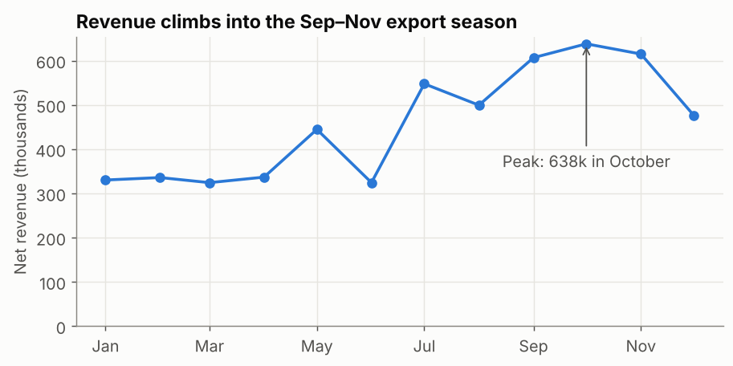
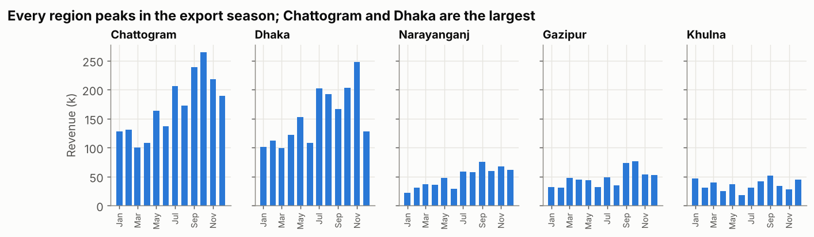
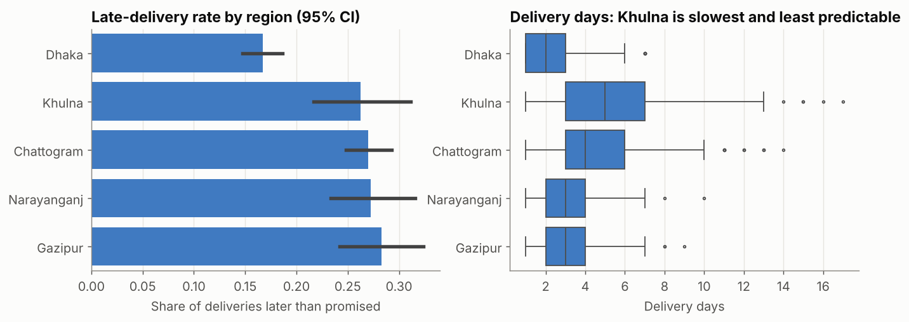
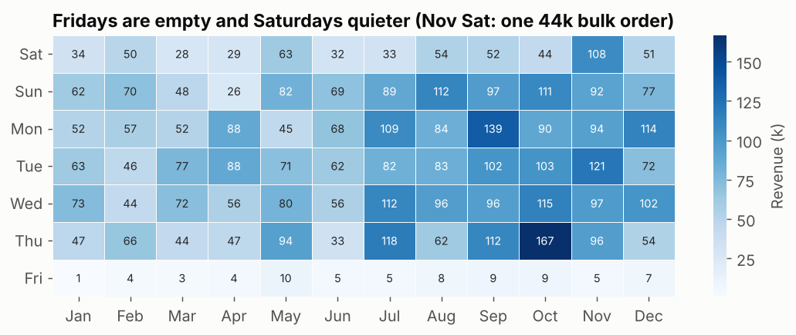

Matplotlib & Seaborn: Charts You Control
Build clear analytical charts in Python: matplotlib's Figure/Axes model, annotations and small multiples, and seaborn's one-line statistical charts — bar charts with confidence intervals, box plots and heatmaps.
Before you start
- data-science-scripts.zipAll 21 Phase 2 lesson scripts (NumPy to research thinking), shared chart style, data folder and solutions · 230 KB
- orders_2025.csv4,246 clean orders for 2025 (synthetic, fixed seed): region, segment, channel, product, price, discount, status, delivery days, revenue · 472 KB
What is it?
| Library | Strength | Use it for |
|---|---|---|
| matplotlib | Total control of every element | Report charts, custom layouts, annotations |
| seaborn | Statistical charts from a DataFrame in one call, built on matplotlib | Comparisons with CIs, distributions, heatmaps |
Why it matters at work
Notebooks, reports and model evaluations are full of Python charts. A clear chart with an action title gets read; a default chart with a legend of five rainbow colours gets skipped. Python charting is also how you show EDA and model results in interviews and portfolios.
The script is 15_viz_matplotlib_seaborn.py. Every chart uses apply_style() and save() from chart_style.py.
Part 1: the matplotlib model — Figure and Axes
- A Figure is the whole image. An Axes is one chart inside it (with its x-axis and y-axis).
fig, ax = plt.subplots()creates both. Then you call methods on the Axes:ax.plot,ax.bar,ax.set_title…
monthly = net.groupby("month")["revenue"].sum() / 1000
fig, ax = plt.subplots(figsize=(8, 3.6)) # Figure = the canvas, Axes = one chart
ax.plot(monthly.index, monthly.values, marker="o", color=PALETTE[0])
ax.set_title("Revenue climbs into the Sep–Nov export season")
ax.set_ylabel("Net revenue (thousands)")
ax.set_ylim(0, None) # bars and totals start at zero
peak = monthly.idxmax()
ax.annotate(f"Peak: {monthly.max():.0f}k in {peak:%B}", (peak, monthly.max()), xytext=(0, -85), ha="center",
textcoords="offset points", arrowprops={"arrowstyle": "->", "color": INK_2}, color=INK_2)
ax.xaxis.set_major_formatter(plt.matplotlib.dates.DateFormatter("%b"))
save(fig, "viz_monthly_line.png")

Four habits in eight lines:
- Action title that states the finding.
- Units in the axis label ("thousands").
- Y-axis from zero for totals, so differences aren't exaggerated.
- One annotation pointing at what matters.
Two styles
You'll also see plt.plot(...), plt.title(...) (the "pyplot" style). It's fine for quick looks, but fig, ax scales to several charts and is what the docs recommend for anything you keep.
Part 2: small multiples
When five lines on one chart become spaghetti, give each series its own small chart with the same y-axis:
regions = net.groupby("region")["revenue"].sum().sort_values(ascending=False).index
fig, axes = plt.subplots(1, len(regions), figsize=(12, 2.8), sharey=True)
for ax, region in zip(axes, regions):
m = net[net["region"] == region].groupby("month")["revenue"].sum() / 1000
ax.bar(m.index, m.values, width=20, color=PALETTE[0])
ax.set_title(region, fontsize=11)

sharey=True makes the panels comparable at a glance: Chattogram and Dhaka are the big regions, and every region has the same seasonal shape.
Part 3: seaborn — statistics built in
Seaborn takes a DataFrame and column names, and does the grouping and statistics for you.
delivered["late"] = delivered["delivery_days"] > delivered["promised_days"]
order_regions = delivered.groupby("region")["late"].mean().sort_values().index
fig, axes = plt.subplots(1, 2, figsize=(12, 3.8))
sns.barplot(data=delivered, x="late", y="region", order=order_regions, errorbar=("ci", 95), color=PALETTE[0],
ax=axes[0]) # mean of True/False = late rate, with 95% CI
sns.boxplot(data=delivered, x="delivery_days", y="region", order=order_regions, color=PALETTE[0],
fliersize=2, ax=axes[1])

sns.barplotcomputes the mean per group (the mean of True/False is a rate) and draws a 95% confidence interval (bootstrapped), the same picture as the Statistics lesson, in one call.sns.boxplotshows the whole distribution per group.- Passing
ax=puts seaborn charts into your own matplotlib layout, so you can mix both libraries.
Heatmap: two categories × one number
grid = net.pivot_table(index="weekday", columns=net["order_date"].dt.month, values="revenue", aggfunc="sum") / 1000
sns.heatmap(grid, cmap="Blues", annot=True, fmt=".0f", cbar_kws={"label": "Revenue (k)"}, ax=ax)
order_date Sep Oct Nov
weekday
Fri 9.0 9.0 5.0
Sat 52.0 44.0 108.0
Sun 97.0 111.0 92.0

Fridays are empty (the weekly holiday) and Saturdays quieter. One cell breaks the pattern: Saturdays in November (108k). Check before explaining: it contains the single 44,127 bulk order from 29 November. Heatmaps are great at revealing such exceptions; annotations (annot=True) give the exact values.
Choosing the chart
| Question | Chart |
|---|---|
| Change over time | Line (few series) or small multiples (many) |
| Compare categories | Sorted horizontal bars |
| Rate per group with uncertainty | Bars or dots with CIs (sns.barplot, sns.pointplot) |
| Distribution | Histogram; box plots to compare groups |
| Two categories × a number | Heatmap |
| Two numbers | Scatter (log scale for money) |
| Share of a whole over time | 100% stacked bars (few categories) |
Common mistakes
| Mistake | What happens | Fix |
|---|---|---|
| Bar charts not starting at 0 | Small differences look huge | ax.set_ylim(0, None) for bars and totals |
| Five+ colours and a legend | Readers match colours back and forth | Small multiples, or highlight one series with direct labels |
| Descriptive titles ("Revenue by month") | The point is left to the reader | Action titles |
| Default figure size and dpi | Blurry or cramped images | figsize= and savefig(dpi=130, bbox_inches="tight") |
| Red/green as the only signal | Unreadable for colour-blind readers | Colour-blind-safe palette, plus labels |
Try it yourself
Task: Make a 100% stacked bar chart of revenue share by category (Fabric, Yarn, Trims) for each month. Is the product mix stable through the year?
Show a hint
Pivot to month × category, divide each row by its total, then draw one ax.bar per category with bottom= set to the running total of the previous categories.
Show the solution
share = net.pivot_table(index="month", columns="category", values="revenue", aggfunc="sum")
share = share.div(share.sum(axis=1), axis=0) * 100
fig, ax = plt.subplots(figsize=(9, 3.4))
bottom = 0
for i, cat in enumerate(["Fabric", "Yarn", "Trims"]):
ax.bar(share.index, share[cat], bottom=bottom, width=20, color=PALETTE[i], label=cat)
bottom = bottom + share[cat]
ax.set_title("The product mix is stable all year")
ax.set_ylabel("Share of revenue (%)")
ax.legend(ncol=3, loc="upper left", bbox_to_anchor=(0, -0.12))
save(fig, "viz_mix_stacked.png")
print(share.round(1).agg(["min", "max"]))
category Fabric Trims Yarn
min 37.7 12.7 36.4
max 47.5 21.2 46.5
Fairly stable: Fabric and Yarn each stay between about 36% and 48% of monthly revenue, Trims between 13% and 21%. The seasonal peak is driven by volume, not by a change in what customers buy.
Quick quiz
1. In fig, ax = plt.subplots(), what is ax?
- The whole image
- One chart (with its axes) inside the figure
- The x-axis only
Show answer
B.
2. What does sharey=True do in small multiples?
- Uses the same y-axis scale on every panel, so they can be compared
- Shares colours between panels
- Hides the y-axis
Show answer
A.
3. Which seaborn chart gives a mean per group with a confidence interval in one call?
sns.heatmapsns.barplotsns.boxplot
Show answer
B.
Summary
- matplotlib:
fig, ax = plt.subplots(), then methods onax; add an action title, units, a zero baseline and one annotation. - Use small multiples (
sharey=True) instead of many-coloured spaghetti charts. - seaborn: statistical charts from a DataFrame (
barplotwith CIs,boxplot,heatmap), placed into your own layout withax=. - Pick the chart by the question; check exceptions (like November Saturdays) before explaining them.
Job-ready check
Interview question: "How do you decide which chart to use?"
Strong answer: "I start from the question and the message: trends over time get a line chart, comparisons get sorted bars, distributions get histograms or box plots, and rates per group get dots or bars with confidence intervals. Then I remove anything that doesn't support the message: a clear action title, units, a zero baseline for totals, and at most one highlight colour."
Mini project: Create a 2×2 figure for orders_2025.csv: monthly revenue (line), revenue by segment (sorted bars), order-value distribution (log histogram) and late rate by region (dots with CIs), each with an action title.
Free resources to go deeper
- Matplotlib quick start guide
- An introduction to seaborn
- Fundamentals of Data Visualization (free online book)
Last reviewed: 2026-10-09